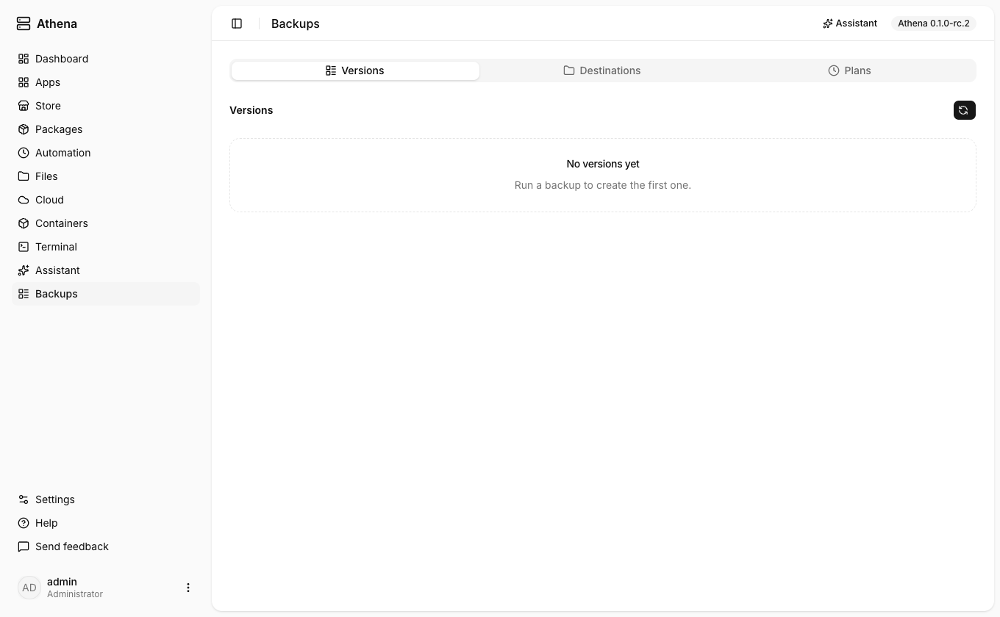

Backups

Back up Athena and its apps on a schedule, encrypted and deduplicated, to a local folder or disk or to any cloud remote. Backups use restic, which Athena downloads and checks by itself.
The page has three tabs:
- Destinations: where backups go. A local destination must be an absolute folder you can write to, and not inside Athena's data folder. A cloud destination needs rclone.
- Plans: what to back up and when. A plan picks Athena itself (database, settings, encryption key, certificates) and any apps. Each one is kept as its own version, so restoring one app doesn't touch the others. A plan also sets how many versions to keep.
- Versions: every backup taken, with date and size. Restore any one.
Apps are stopped briefly while their files are copied, so each copy is consistent. Named Docker volumes are included.
Restore
- One app: restore a version from Versions, or from the app's page. Useful after a broken update or deleted data.
- All of Athena on a new host: install Athena, then restore from the first-run screen, or use
athena restorefrom the command line.
Each destination is encrypted with a password Athena generates. It is shown once, in a recovery kit, when you create the destination. Save it somewhere safe: without it the backups can't be read.
What isn't backed up
The operating system, your home folders, and any folder no app uses. Athena isn't a general backup tool.